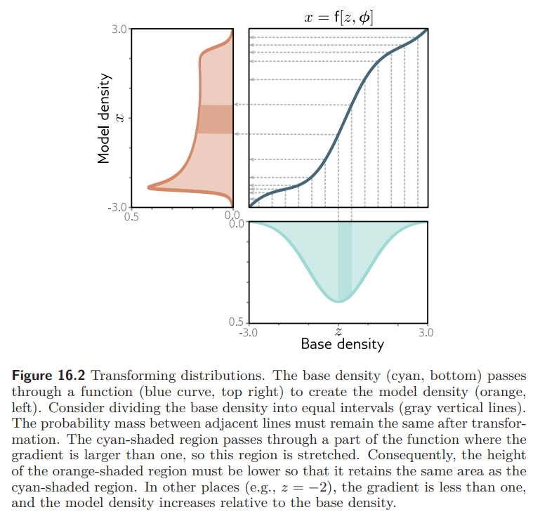
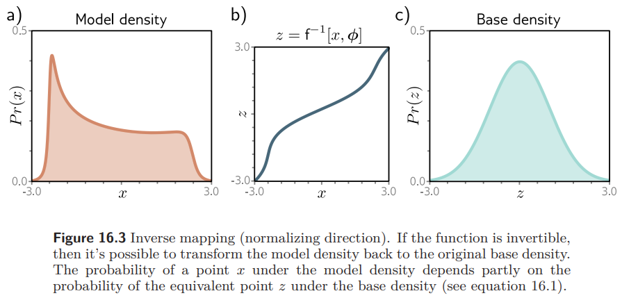

Normalizing Flows
How a chain of simple, invertible transformations turns a plain Gaussian into a complicated data distribution and lets you compute its exact likelihood.
1. Motivation
We've already seen GANs: generative models that pass a latent variable through a deep network to produce a new sample. GANs are trained on the principle that generated samples should be indistinguishable from real data but that training signal never actually defines a distribution over the data. As a result, there's no straightforward way to ask a GAN "how probable is this specific example under the model?"
VAEs and Diffusion models get a little closer, but not all the way there. They do define a distribution over the data - just not one whose probability you can actually compute. Instead of the true likelihood, training only optimizes the ELBO, a lower bound on it. So a VAE can't answer "how probable is this specific example?" either - only "here's a bound on how probable it might be."
Normalizing flows fix exactly this gap. They let you both sample and compute an exact likelihood for any given data point, by building the data distribution out of a simple one through a sequence of invertible transformations.
An arbitrary random variable can be transformed into another random variable of interest via repeated application of invertible, deterministic functions.
Concretely: start with something easy to sample from and easy to score - a standard Gaussian \(z\sim\mathcal{N}(0,I)\). Pass it through an deterministic invertible function \(f\) to get \(x=f(z)\). If you can track exactly how much \(f\) stretches or squeezes space at every point, you can convert the simple density of \(z\) into the exact density of \(x\) - no approximation required.
The tool that does this bookkeeping is the change of variables theorem. Everything in this post builds up from that one idea.
2. The Change of Variables Theorem
Suppose you know the distribution of a random variable \(Z\), and you want the distribution of \(X=f(Z)\) for some function \(f\). The change of variables theorem tells you exactly how to get it.
Recall what makes something a valid probability density in the first place:
It's natural to guess that if \(X=2Z\), then \(p_X(x{=}2)=p_Z(z{=}1)\) - just plug the corresponding \(z\) value straight into \(p_Z\). This is wrong. Stretching or squeezing a variable changes how "spread out" its probability mass is, and a density has to account for that, not just relabel the axis.
3. A Worked 1D Example
Here's why the naive shortcut fails. Suppose \(Z\) is uniform, with density \(p_Z(z)=0.5\) over the interval \([0,2]\) - a flat rectangle of height 0.5 and width 2, so the total area (total probability) is \(0.5\times2=1\).
Now transform it with \(y=z/4\), squeezing the interval \([0,2]\) down to \([0,0.5]\). For this to still be a valid density, the area still has to equal 1 - but the width just shrank by a factor of 4. So the height has to grow by a factor of 4 to compensate: \(p_Z(z)=2\) over \([0,0.5]\).
The total probability mass must remain unchanged after the transformation. In other words, the area under the probability density must still integrate to \(1\):
Therefore, when the transformation squeezes the axis, the density must increase to compensate for the reduced width. Conversely, when it stretches the axis, the density must decrease so that the total probability mass remains \(1\).
4. Deriving the 1D Formula
A single deterministic invertible function \(x=f(z,\phi)\) can turn a plain Gaussian base density into a much richer model density. The figure below shows one such function:

The key requirement is that the two regions - the thin sliver on the \(z\)-axis and its image on the \(x\)-axis - must contain the same amount of probability mass:
Rearranging this gives the general rule for one dimension:
\(dz/dx\) can be negative - for instance if \(f\) is decreasing. But a probability density can never be negative. Taking the absolute value handles both increasing and decreasing transformations with the same formula.

Since \(x=f(z)\), the chain rule tells us \[ \frac{d(f^{-1}(x))}{dx} = \frac{dz}{dx} = \left(\frac{dx}{dz}\right)^{-1} = \left(\frac{df(z)}{dz}\right)^{-1}, \] so this is equivalent to:
Take a thin sliver line of the \(z\)-axis, from \(z\) to \(z+dz\), and see where it lands after passing through \(f\).
Compressing: \(f(z)=z/4\)
Here \(\frac{dx}{dz} = \frac{df(z)}{dz} = \frac{1}{4}\), so plugging into the boxed formula:
Squeezing the input space by a factor of 4 makes the density 4× taller - the samples got packed tighter together.
Stretching: \(f(z)=2z\)
Here \(\dfrac{dx}{dz}=\dfrac{df(z)}{dz}=2\), so plugging into the boxed formula:
Spreading the input space out by a factor of 2 makes the density half as tall - the samples got spread thinner.
5. Generalizing to Higher Dimensions
In 1D, a "sliver" was just a length \(dz\), and compressing or stretching was just a scalar factor \(dx/dz\). In higher dimensions, a sliver becomes a tiny rectangle (or box) of volume, and a transformation can stretch different directions by different amounts - even rotate and skew the box into a parallelogram.
For two dimensions, let \(x_1=f_1(z_1,z_2)\) and \(x_2=f_2(z_1,z_2)\). A small step in \(z\)-space maps to:
The area swept out by two vectors \(\mathbf{u},\mathbf{v}\) is \(|\det([\mathbf{u}\ \mathbf{v}])|\). A small square of area \(dz_1\,dz_2\) in \(z\)-space gets mapped to a small parallelogram in \(x\)-space, and its area works out to be the original area in z space, times the determinant of the Jacobian matrix of partial derivatives.
Derivation: the small square \(dA_z\) is itself a diagonal matrix of side lengths \(dz_1,dz_2\), and likewise for its image \(dA_x\):
Substituting \(dx_1,dx_2\) from the chain rule above splits this into the Jacobian matrix times the diagonal matrix of \(dz_1,dz_2\):
Since the determinant of a product of matrices is the product of their determinants, this factors cleanly:
This is exactly the multivariable analogue of \(dx=|f'(z)|\,dz\) from before - the determinant of the Jacobian is just "the scaling factor," generalized to handle multiple correlated dimensions at once.
Conservation of probability mass gives the same kind of equation as before, just with the Jacobian determinant standing in for the scalar derivative:
Equivalently, written in terms of the inverse function:
You never actually need to invert the Jacobian matrix by hand. Since \(f^{-1}(f(z))=z\), differentiating both sides shows \(J_{f^{-1}}(x)=J_f(z)^{-1}\), and because \(\det(A^{-1})=\det(A)^{-1}\) for any invertible matrix \(A\), you can always compute whichever Jacobian determinant is more convenient and just take the reciprocal.
Putting \(x\) as our data and \(z\sim\mathcal{N}(0,I)\) as a simple base distribution, with \(x=f(z)\):
provided \(f\) is differentiable and invertible. This single equation is the entire foundation of normalizing flows.
6. Chaining Simple Flows Into a Complex One
Taking a log of both sides turns the product into a sum — and gives us the log-likelihood, which is what we'll actually maximize during training:
Since \(z\sim\mathcal{N}(0,I)\), its log-density has a simple closed form:
\(f\) has to stay invertible, so it can't be an arbitrarily complicated neural network. Expecting one modestly simple invertible function to turn a plain Gaussian directly into a rich, complex data distribution is asking too much of it.
The fix: stack many simple invertible transformations in a row. Each individual step \(f_n\) can be simple, but the composition of many of them can represent something far more complex.
Each \(f_n\) is invertible, so the whole composed function \(F=f_N\circ f_{N-1}\circ\cdots\circ f_1\) is automatically invertible too, with inverse \(F^{-1}=f_1^{-1}\circ f_2^{-1}\circ\cdots\circ f_N^{-1}\).
Applying the log-likelihood formula once per step and telescoping the result all the way back to \(z_0\) gives:
Training maximizes this quantity directly — an exact log-likelihood, with no approximation or lower bound involved.
7. Training vs. Sampling
Notice the formula above runs in the inverse direction — from data \(x=z_N\) back down to \(z_0\), through \(f_N^{-1},f_{N-1}^{-1},\ldots,f_1^{-1}\). That asymmetry defines two distinct passes through the model:
Training (normalizing direction)
We go from the data distribution to the simple Gaussian, using the inverse functions, and maximize \(\log p_X(x)\) — equivalently, minimize \(-\log p_X(x)\), the negative log-likelihood of the data. This is where the name normalizing flow comes from.
Sampling (generative direction)
We draw \(z_0\sim\mathcal{N}(0,I)\) and run it through the forward pass — \(f_1,f_2,\ldots,f_N\) — to produce a new data sample \(x\). This direction is used for inference/generation.
8. Designing a Good Transformation
Not just any neural network can serve as one of the \(f_n\) steps. To be usable inside a flow, a transformation needs to satisfy a short list of constraints:
- It must be easily invertible and differentiable.
- The determinant of its Jacobian must be cheap to compute.
- Its output \(z_n\) must have the same dimensionality as the input \(x\) — e.g. if \(x\in\mathbb{R}^{3\times256\times256}\), every intermediate \(z_n\) lives in that same space.
For data of dimensionality \(n\), a general Jacobian is an \(n\times n\) matrix. Computing the determinant of an arbitrary \(n\times n\) matrix during every training step would be prohibitively expensive for anything image-sized. Flow architectures are essentially defined by clever tricks for dodging this cost.
9. RealNVP: The Affine Coupling Layer
RealNVP solves the Jacobian problem with a building block called the affine coupling layer. The trick: split the input into two parts, leave one part completely untouched, and use it to control how the other part is shifted and rescaled.
Split \(x\) into \(x_{1:d}\) and \(x_{d+1:D}\). The forward pass is:
Here \(s\) (scale) and \(t\) (shift) are two ordinary neural networks that take only the untouched part \(x_{1:d}\) as input. The exponential is there because the networks predict a log-scale, which keeps the scaling factor guaranteed positive.
Because \(s\) and \(t\) only ever see \(x_{1:d}\) as input, inverting this transformation is simple algebra — no matrix inversion needed:
10. Why Its Jacobian Is Cheap
Write out the Jacobian of the coupling transformation with respect to \((x_{1:d},x_{d+1:D})\):
The top-left block is the identity \(I_d\), since the first part of the output is exactly the first part of the input. That structure makes this a lower-triangular matrix — and the determinant of a triangular matrix is just the product of its diagonal entries:
We never had to differentiate the scale or shift networks themselves to get this determinant — only sum up the scale network's own output. That means \(s\) and \(t\) are free to be arbitrarily deep, complex neural networks; none of that complexity ever leaks into the cost of computing the Jacobian.
Plugging this back into the flow log-likelihood collapses nicely:
Stacking coupling layers
RealNVP is just a sequence of these affine coupling layers, one feeding into the next:
Since each forward pass leaves \(x_{1:d}\) completely unchanged, that same slice of the data would stay frozen through the entire chain if every layer split the input the same way — clearly not desirable. RealNVP's fix is to alternate which half is held fixed from one layer to the next, so every dimension gets transformed by roughly half of the layers.
11. Key Takeaways
- Normalizing flows build a complex data distribution out of a simple base distribution (usually \(\mathcal{N}(0,I)\)) via a chain of invertible, differentiable transformations.
- The change of variables theorem is the whole foundation: transforming a variable rescales its density by the (absolute) Jacobian determinant of the transformation, so that total probability is conserved.
- Stacking many simple, invertible steps lets the overall model represent something far more complex than any single step could, while keeping everything exactly invertible.
- Training runs the inverse direction (data → noise) to maximize the exact log-likelihood; sampling runs the forward direction (noise → data).
- A usable transformation needs a Jacobian determinant that's cheap to compute — for general functions, this is an expensive \(n\times n\) determinant.
- RealNVP's affine coupling layer sidesteps this by leaving half the input untouched and using it to scale and shift the other half, which makes the Jacobian triangular — its determinant is just the product of the diagonal, with no restriction on how complex the scale/shift networks themselves are.
Normalizing flows trade some architectural freedom (every layer must be invertible) for something GANs and VAEs don't offer: an exact, tractable likelihood — and the ability to sample and evaluate density with the very same model.